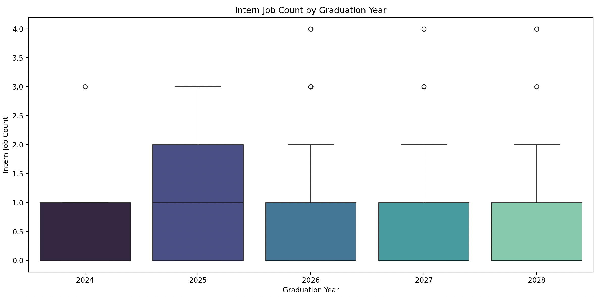

Write Up for Job Recommender System
Introduction
Let’s be honest—job hunting sucks. It’s like online dating but worse, because at least bad dates come with free food (well, except for Ryan who loses money). That’s why we decided to join forces and create this job recommendation system, turning our shared frustration (just kidding) into a creative solution. Inspired by the need for a real-world, impactful project, we aimed to build something valuable for the Data Science UCSB club that could help members succeed in the industry. By combining machine learning with domain expertise, we hope to make job hunting a bit less painful for everyone.
Methodology
Exploratory Data Analysis
We began by getting access to the Data Science UCSB Club member registration dataset, which included insights into members’ skillsets, interests, and academic backgrounds. We also needed job data to pair with our member data, and we found this through a Kaggle dataset that contained information like job titles, required skills, and perks. After we identified the datasets, we cleaned them by handling missing values, removing unneccessary columns, and factoring categorical variables. Afterwards, we wanted to see if there were any useful information or trends normally not visible and developed visualizations to better understand our results. We then found various insights: correlations between certain coding languages, a majority of members identifying as data science majors, a steady increase in average internship counts with advancing school years, a predominance of internships among job listings, and computer science emerging as the most frequently sought-after major. Computer science being the most highly demanded major was especially surprising, considering that the dataset highlighted data science jobs. This could be a factor as to why the job hunt isn’t going so well for data science majors, as computer science offers broader career opportunities and foundational skills that are applicable across various industries. Additionally, our internship analysis, illustrated through box plots and stacked proportion bar graphs, revealed that most students across graduation years completed zero or one internship. While the 2025 cohort showed slightly higher participation and the 2024 cohort had notable outliers with higher internship counts, the overall trend highlights a significant gap in internship experiences. This demonstrates the urgent need for our club and school to expand internship opportunities, potentially through providing better resources to enhance students’ career readiness.



Preprocessing and Vectorization
The first step in building the recommendation system is to preprocess both the dataset containing information about each member and the dataset with available jobs and internships. Since some columns of both datasets are numerical, such as intern_job_count and grad_year, a categorization function was used to convert these values into text. We then combined all relevant columns of the members dataset and the internships dataset into a singular text column that can be tokenized. To preprocess the data, we converted all text to lowercase, removed any punctuation, and tokenized all words from the text column using the nltk library. We also used the Porter stemmer to remove any stop words, or commonly used words that do not carry any meaning. After these preprocessing steps were applied to each respective dataset on the text column, we combined all preprocessed data into one variable to use for vectorization. To convert the textual data into numerical form, we implemented TF-IDF (Term Frequency-Inverse Document Frequency) vectorization using the sklearn library. This transforms the text into a matrix of TF-IDF features, quantifying how important a word is relative to a corpus. A TF-IDF matrix is computed after using the fit_transform function to compute the TF_IDF scores for each term. This matrix is then split into two, one for the student data and one for the job data.
Cosine similarity and the Recommendation System
Our recommendation system utilizes a content-based filtering approach to match students (club members) with tailored internship opportunities that align with their unique profiles and interests. The system leverages text preprocessing and TF-IDF vectorization to transform unstructured textual data—like student skills, location preferences, and internship requirements—into numerical representations. Using cosine similarity, the system quantifies how closely a student’s profile matches the attributes of a given internship, such as job qualifications, skills, and location. A heuristic score is calculated by combining these similarity measures, where components like location, experience, and skills are weighted equally to produce an overall “match score. To enhance and automate this recommendation process, the labeled heuristic scores serve as the target variable for training a Random Forest Regressor—an ensemble machine learning model that uses multiple decision trees to predict scores for unseen student-internship pairs. Input features, such as student_id and internship_id, are one-hot encoded to create a format suitable for model training. The trained model generates predictions that rank internships by their relevance to a specific student’s profile. This approach focuses on content-based filtering by using features directly related to the content of both student and internship data, ensuring personalized recommendations based solely on the attributes of the user and items.

Conclusion
Our model was able to generate internship recommendations by leveraging content-based filtering and a Random Forest Regressor, which assigned relevance scores based on how closely a student’s skills, experiences, and preferences aligned with the attributes of each internship. The output is a ranked table of internship suggestions for each student, where each row presents an internship title and its predicted relevance score; higher scores indicate stronger matches. Visualizations highlight the top recommendations, demonstrating the system’s capacity to deliver personalized opportunities. For instance, the top 5 recommended internships could be highlighted, showcasing the system’s ability to deliver tailored and meaningful opportunities for individual students. The final results showed that while the model effectively captured general trends between student and internship profiles, there is room for improvement, particularly in cases where the data lacked sufficient detail or diversity. In conclusion, our job recommendation system takes the pain out of job hunting into a smarter process, taking out the tediousness of online dating (minus the free food, unless you’re Ryan, who again, ends up losing money to pay for everything). As for next steps, we want to turn this into something usable for the Data Science UCSB Club members–but first we need to improve the accuracy. A possible reason why our accuracy is so low is because our predictors did not provide enough information about our candidates, leading to us having to generate fake data to align with the scope of the project. Therefore, for next year’s member registration google form, we’ve decided to add more survey questions to help us understand the needs of our users a lot better. In addition, we were also considering utilizing more advanced machine learning techniques to further improve the accuracy of the recommendations. By continuing to evolve the system, we can make job hunting a whole lot less painful (we promise, it’s a joke again) for everyone.